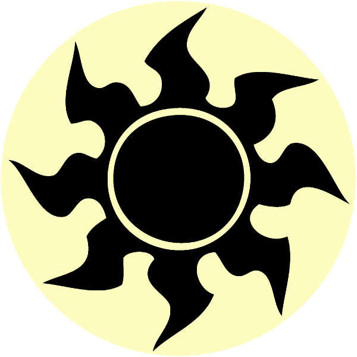

(When all players have finished taking mulligans, if any, determine the first global.)
Chaos
(Each player rolls chaos at the beginning of
his or her chaos step, which takes place each turn after the upkeep step
and before the draw step.)
Rules
The Global
As the first turn of the game begins, put a new global into effect. A global
is not a card, permanent, or token; it is merely an effect that is
constantly applied.
The first global can trigger on the first turn if it has, for example, an
upkeep trigger.
The global can't be countered or destroyed; it remains until an effect
instructs someone to change it.
There can only be one global in effect at any given time. If the global is
changed, the old global ceases to exist and the new one immediately takes
effect.
Activated abilities of the global can be activated by any player.
Triggered abilities of globals don't cause themselves
to trigger. (For example, if the global ends up being
something like "Whenever a player draws a card, that player draws a card,"
it doesn't cause you to draw your whole deck the next time you draw; you
just draw a second card.)
The Chaos Step
Between the upkeep and draw steps is a new step: the chaos step. At the
beginning of each player's chaos step, that player rolls chaos. That player
puts an ability with the generated text directly onto the stack. It isn't
considered activated or triggered, and it is controlled by the player who
put it there (usually the player whose turn it is).
If a chaos effect has modes, modes are chosen before the ability is put on
the stack. Targets are chosen and other choices are made in the usual
manner.
Some chaos effects involve the players taking a vote. This happens at the
same time modes would be chosen for a modal spell, and only the mode that
won the vote goes on the stack. Then targets are chosen for that mode.
Chips
Each player starts the game with 3 chips. Chips are not permanents; they
are a resource that can be used to somewhat steer the chaos in your favor.
A player can pay 1 chip any time he or she has priority to choose one—
Change the global.
Counter target chaos ability. If that ability is countered this way, its
controller rolls chaos.
A player can pay 1 chip any time he or she has priority to play the slot
machine. To do this, that player rolls three six sided dice. On a pair, that
player gains 2 chips. On a triple, that player gains 6 chips. On any other
result, nothing happens.
Retribution
If a player skips his or her chaos step when he or she shouldn't have, if it
is still that player's turn, rewind the game state to that player's chaos
step. Then, before rolling chaos, if there was any new information received
as a result of skipping the chaos step (for example, if the player had
seen the card he or she would draw on his or her draw step), that player
rolls retribution. This will cause some sort of generally negative effect to
happen to that player.
If one or more players did something in violation of the global, either by
doing something it forbids or neglecting to do something it requires, if the
mistake is detected before the end of the turn it was made, rewind the game
state to the relevant point, and the player or players that made the mistake
roll retribution.
If a player changed the global without an effect instructing him or her to
do so, that player rolls retribution.
If a player made a mistake eligible for retribution but it was not detected
until the next turn or later, that player rolls retribution, but do
not rewind the game state.
Retribution effects can't be countered, can't be replaced by replacement
effects, and they don't cause abilities to trigger (for example, if
retribution causes you to discard a card while someone has Megrim in play,
you won't take damage; likewise, you wouldn't be able to cast it for its
madness cost if it had one).
Spite
If a player would lose the game and has two or more opponents remaining who
have not lost the game, that player rolls spite. On rare occasions,
something might happen as a result of the spite effect that replaces the
player losing the game; otherwise, the effect happens, then the player loses
afterwards.
If multiple players would roll spite at the same time, those players roll
spite one at a time in turn order.
You don't get to roll spite if you concede.
Each player can only roll spite at most once per game. If you were somehow
able to continue the game after rolling spite, you don't get to roll spite
again, even if you lose again.
Spite effects can't be countered, can't be replaced by replacement effects,
and they don't cause abilities to trigger.
Resolution
If for some reason the players agree to end the game early before any player
has won, you may roll resolution to determine an arbitrary winner.
If multiple players are tied for best using the criteria rolled, all other
players lose, then roll resolution again for the remaining players.
Tokens
Some chaos effects instruct you to create a token which is only described by
a card name. This means to create a token that's a copy of the card with
that name except that it has no mana cost. For example, if an effect says
"Create a Serra Angel token", it means "Create a 4/4 white Angel creature
token with flying and vigilance named Serra Angel."
If a chaos effect instructs you to create a Clue token, it means a colorless
Clue artifact token with "2, Sacrifice this artifact: Draw a card."
If a chaos effect instructs you to create a Treasure token, it means a
colorless Treasure artifact token with "T, Sacrifice this artifact: Add one
mana of any color to your mana pool."
Mana Crystals
A mana crystal is not a permanent. It's a player resource like life or
chips.
Each mana crystal has a type corresponding to a mana type. (The types of
mana are , , ,
, , and .)
Any time you could activate a mana ability, you may spend one of your mana
crystals to add one mana of the corresponding type to your mana pool. That
crystal then ceases to exist; it can't be reused.
Players don't start the game with any mana crystals, and there is no upper
limit to how many mana crystals a player can have at a time.
Controls
Click "New Global" or press G or Enter on the keyboard to obtain a new
global. This will overwrite the old one immediately, so be careful not to
click it by mistake.
Click "Roll Chaos" or press C or the Spacebar on the keyboard to generate a
new chaos effect. The history of previously
generated chaos effects will be shifted down and the new effect added at the
top of the list. The more times you roll chaos, the more likely you will be
to get a more severe effect.
Click "Slot Machine" or press M on the keyboard to play the slot machine.
The symbols are meaningless
other than for matching; I just thought the six main mana symbols would be
more interesting and flavorful than simply the digits 1 through 6.
Click "Retribution" or press R on the keyboard to roll retribution.
Click "Spite" or press S on the keyboard to roll Spite.
Click "Resolution" or press Q on the keyboard to roll resolution.
(R is for retribution, so you can think of it as Q for quit.)
Reload the page (F5) to start a new game. This will reset the roll counter
and clear the roll history.